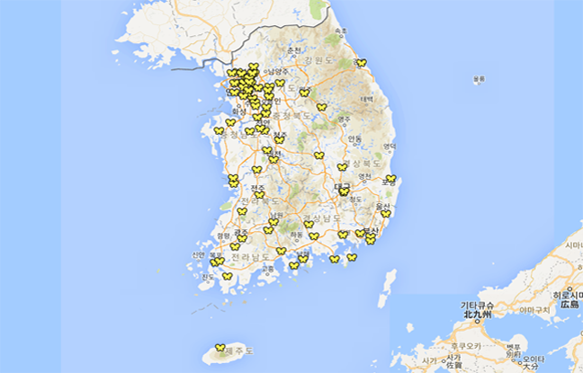

평화의 소녀상은 일본군 위안부 문제 해결을 위한 수요집회 1000회를 맞은 2011년 12월 14일 한국정신대문제대책협의회(정대협)이 중심이 된 시민 모금으로 서울 종로구 일본대사관 앞에 처음 세워졌다. 일본군 위안부 문제 해결을 촉구하는 의미에서 세운 동상으로, 부부 작가(김운성, 김서경)의 작품이다.
소녀상은 높이가 130cm이며 치마저고리를 입고 짧은 단발머리를 한 소녀가 의자에 앉은 채 일본대사관을 응시하고 있는 모습을 하고 있다. 이는 위안부 피해 할머니들이 일본군에 끌려갔던 14∼16세 때를 재현한 것이다. 또 소녀상의 옆에는 빈 의자 하나가 놓여 있는데, 이는 할머니들의 고통에 공감해 보라는 뜻을 담고 있다. 평화비 표지석에는 일본군 위안부 피해자인 길원옥 할머니가 직접 쓴 평화비 문구와 함께 “1992년 1월 8일부터 이곳 일본대사관 앞에서 열린 일본군 위안부 문제 해결을 위한 수요시위가 2011년 12월 14일 천 번째를 맞이함에, 그 숭고한 정신과 역사를 잇고자 이 평화비를 세운다.”라고 적혀 있다. 평화의 소녀상은 이후 국민 모금 등으로 전국 27곳과 미국 캘리포니아 주 글렌데일 시립공원 등 해외 3곳에도 세워져 일본군 위안부 문제의 실상을 외부에 알리는 역할을 하고 있다. [네이버 지식백과] 평화의 소녀상 (시사상식사전)
소녀상의 자세한 위치 검색
